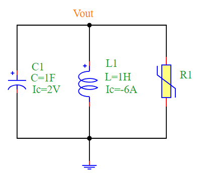
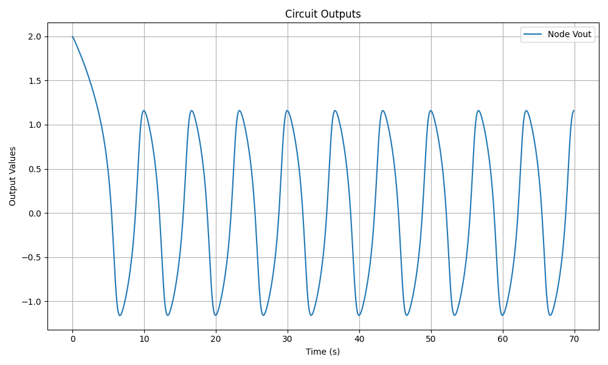

Van der Pol Oscillator
Overview
The Van der Pol oscillator is a non-conservative oscillator with non-linear damping. It is commonly used in physics, electronics, and biological systems to describe self-sustained oscillations. The oscillator follows the second-order differential equation:
In the context of an electrical circuit, the equation takes the form:
where the nonlinear resistance is defined as:
Circuit Diagram
The following circuit diagram represents the Van der Pol Oscillator:
Simulation Code
The following Python script simulates the Van der Pol Oscillator using the PyAMS library:
from pyams.lib import model, signal, param
from pyams.lib import voltage, current
# Nonlinear Resistance Model
class NonlinearResistance(model):
def __init__(self, p, n):
self.V = signal('in', voltage, p, n)
self.I = signal('out', current, p, n)
self.\u03bc = param(1.0, ' ', 'Scalar of nonlinearity')
def analog(self):
self.I += self.\u03bc * self.V * (self.V * self.V - 1)
from pyams.lib import circuit
from models import CapacitorIc, InductorIc
# Define Components
R1 = NonlinearResistance("Vout", "0")
C1 = CapacitorIc("Vout", "0")
L1 = InductorIc("Vout", "0")
# Set Parameters
C1.setParams("C=1F Ic=2V")
L1.setParams("Ic=-6A L=1H ")
# Create Circuit and Add Elements
circuit = circuit()
circuit.addElements({'R1': R1, 'C1': C1, 'L1': L1})
# Set Outputs
circuit.setOutPuts("Vout")
# Perform Transient Analysis
circuit.analysis(mode="tran", start=0, stop=70, step=0.1)
circuit.run()
circuit.plot()
Simulation Output
The output waveform of the Van der Pol Oscillator exhibits self-sustained oscillations, as shown in the figure below:
Simulation and Results for different values of \(\mu\)
Below is the Python code used to simulate the Van der Pol oscillator with different values of \(\mu\).
from pyams.lib import circuit
from models import CapacitorIc, InductorIc
R1 = NonlinearResistance("Vout","0")
C1 = CapacitorIc("Vout","0")
L1 = InductorIc("Vout","0")
C1.setParams("C=1F Ic=2V")
L1.setParams("Ic=-6A L=1H")
circuit = circuit()
circuit.addElements({'R1':R1,'C1':C1,'L1':L1})
circuit.setOutPuts("Vout", C1.I)
circuit.analysis(mode="tran", start=10, stop=18, step=0.01)
import matplotlib.pyplot as plt
plt.figure(figsize=(10, 6))
for µ in [0.08, 0.1, 0.5, 0.8, 1.2, 1.6, 1.8, 2.2]:
print(f"\nCurrent value of µ: {µ}")
R1.µ += µ
circuit.run()
x, dx = circuit.getOutPuts()
label = rf"$\frac{{dx}}{{dt}}$ for µ={µ}"
plt.plot(x, dx, label=label)
plt.xlabel("x = Vout")
plt.ylabel(r"$\frac{dx}{dt}(x) = C_1 \cdot I$")
plt.title("Van der Pol Oscillator Phase Space")
plt.legend()
plt.grid(True)
plt.tight_layout()
plt.show()
Results
Conclusion
The Van der Pol Oscillator demonstrates a non-linear damping effect, causing the amplitude of oscillations to stabilize over time. This circuit is widely used to model real-world oscillatory behavior in electronic and biological systems.